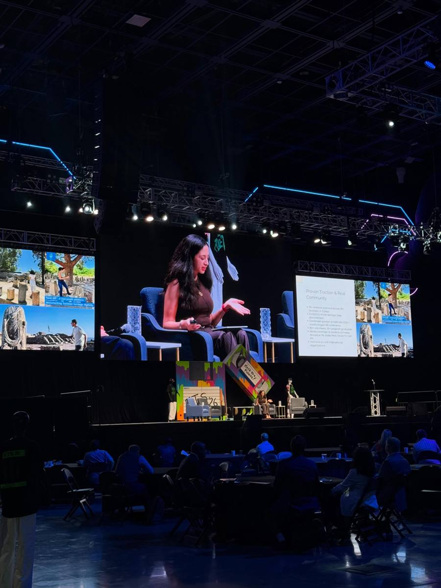
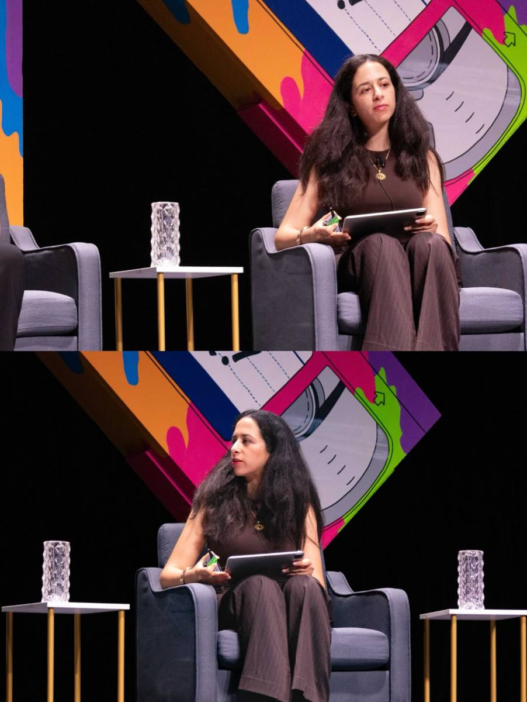
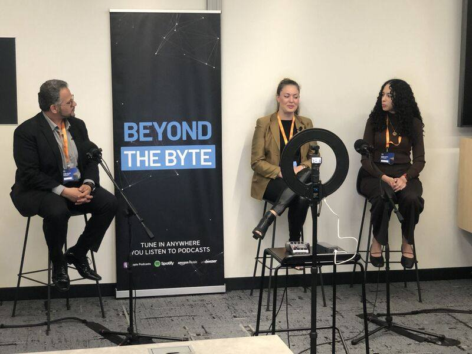
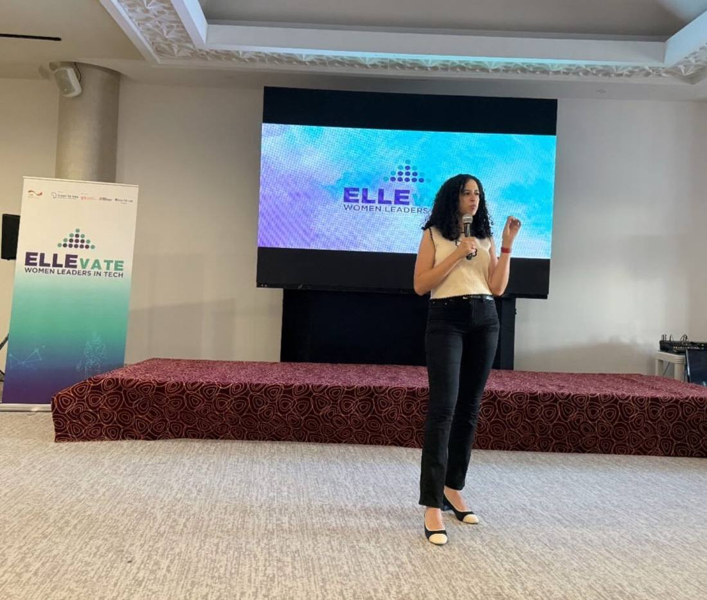
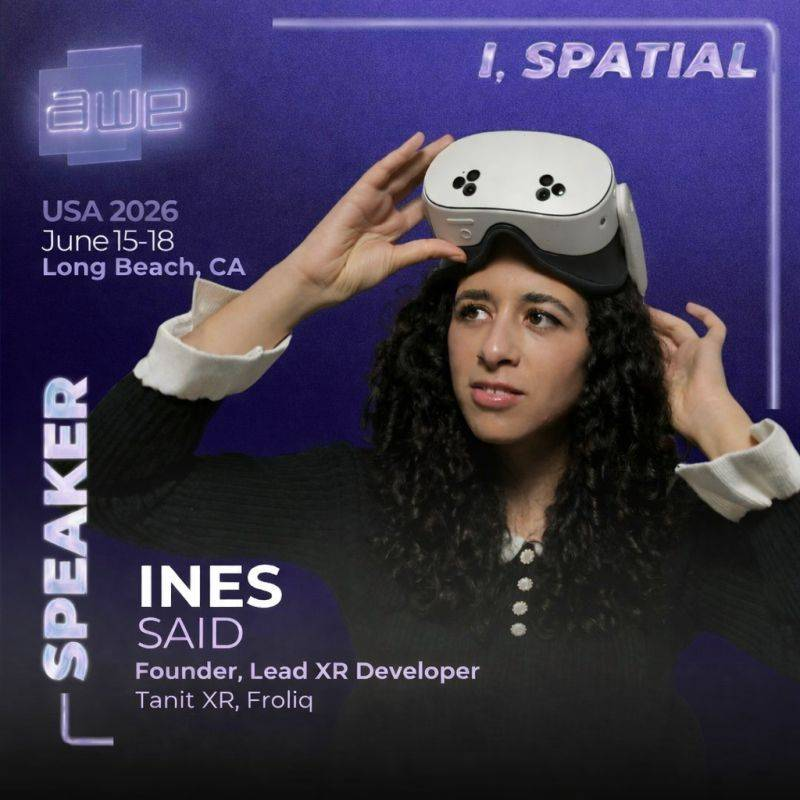

Speaking & Media
I speak about XR for cultural heritage, climate and sustainability through immersive tech, and building XR that changes how people learn — from the Smithsonian to a Roman colosseum.
I'm available for keynotes, panels, workshops, and university guest lectures — in person or virtual, in English, Arabic, or French. Recent stages include Augmented World Expo, Games for Change, the Global XR Conference, and the El Jem International Conference in Tunisia — where I presented inside the Roman amphitheater itself. In 2025 alone, my talks and demos reached 11,000+ people across 40+ events.





Beyond the stage — hands-on training and XR development for teams.
Train your team to capture your collection, facility, or site in 3D — photogrammetry and Gaussian splatting with the phones already in their pockets. Half-day to multi-day, for museums, universities, and companies. Based on the curriculum behind Tanit XR's free public courses.
From concept to headset: AR, VR, and WebXR experiences on Apple Vision Pro, Meta Quest, mobile, and the open web. The same pipeline behind installations for the Smithsonian, Oracle Utilities, and power-industry clients.
End-to-end digital preservation for cultural institutions: on-site scanning, open-access archives, virtual museums, and AR experiences — the Tanit XR model, applied to your collection.
Booking a talk, planning a workshop, or exploring a project — this lands straight in my inbox.